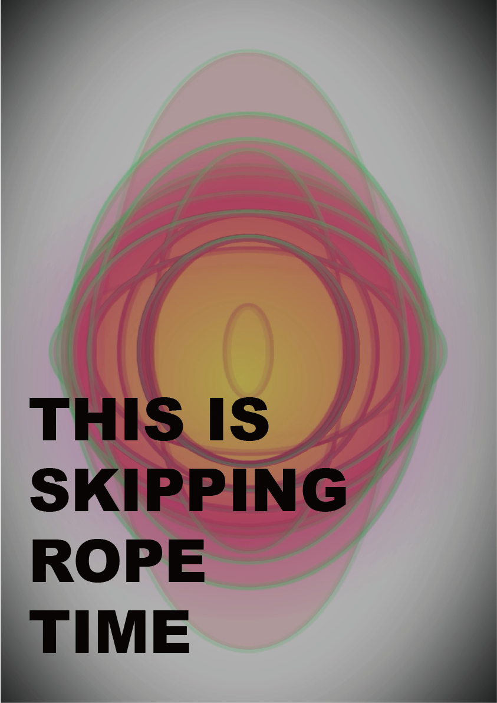
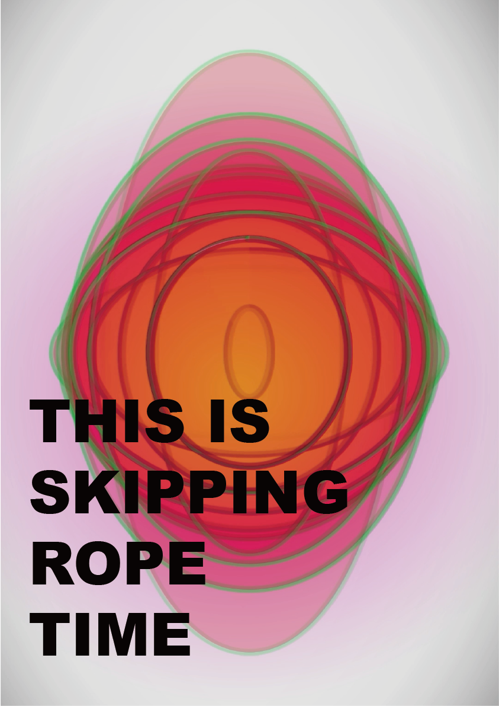
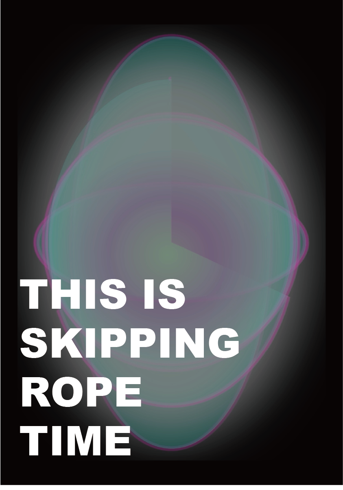
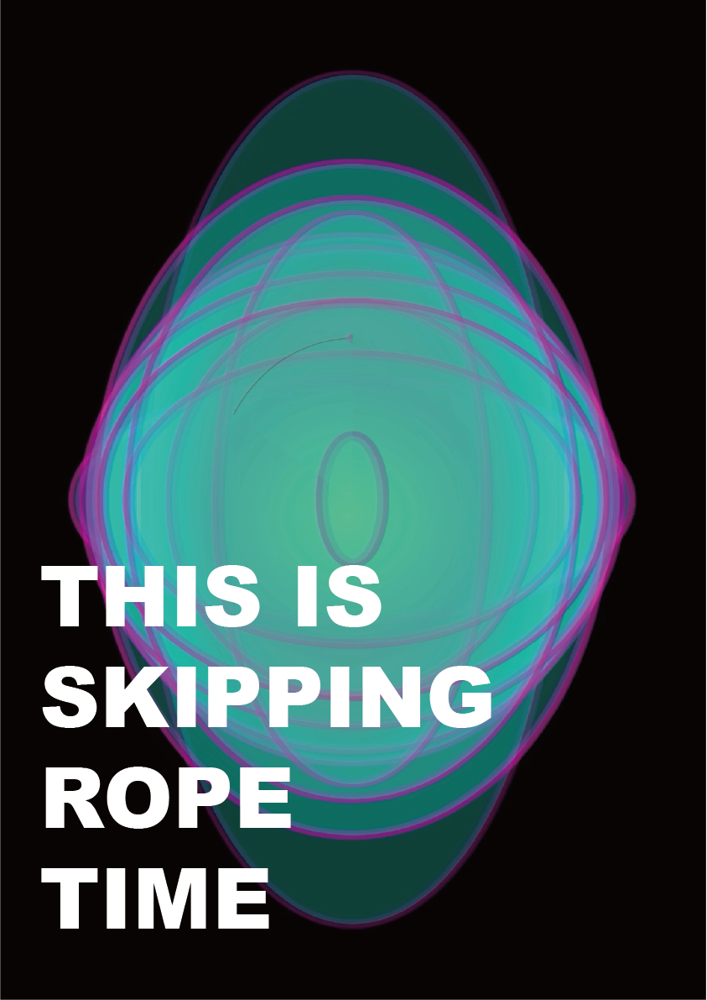
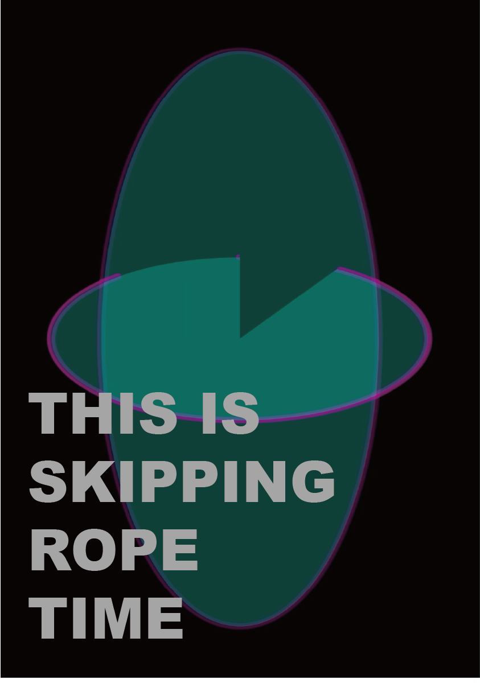
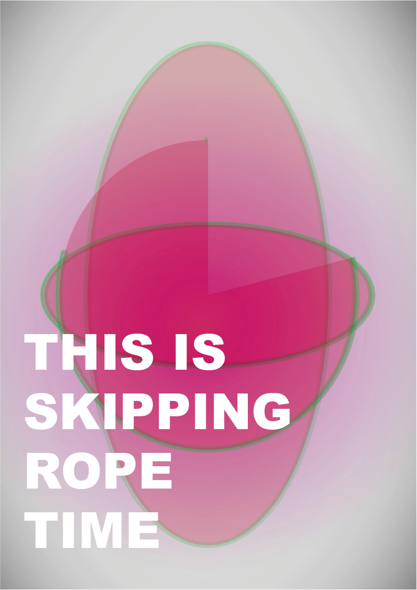
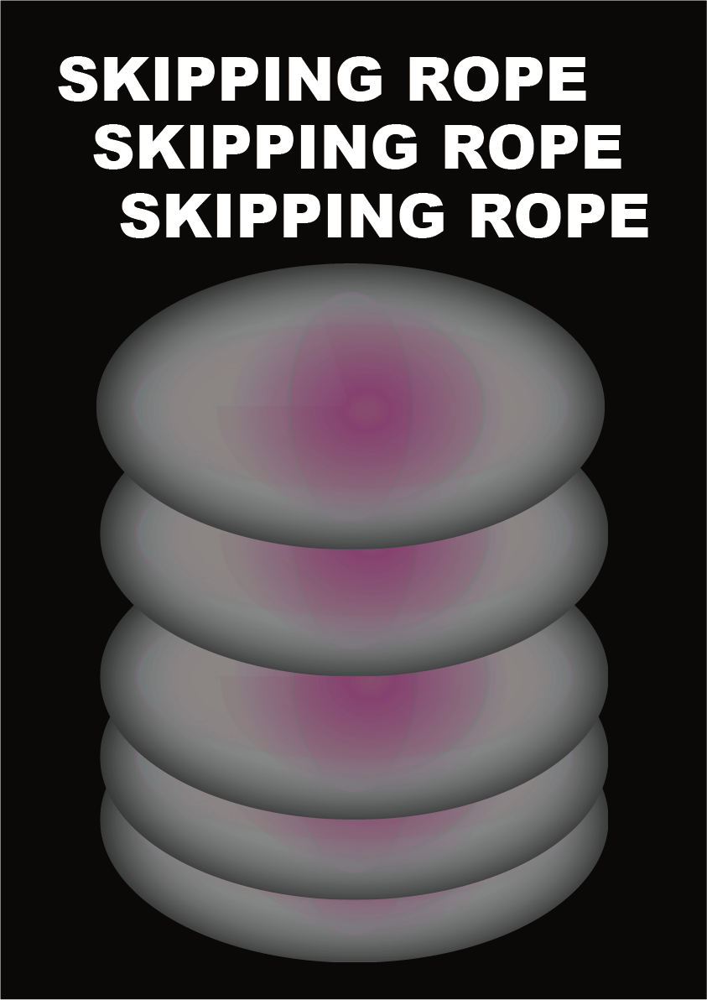
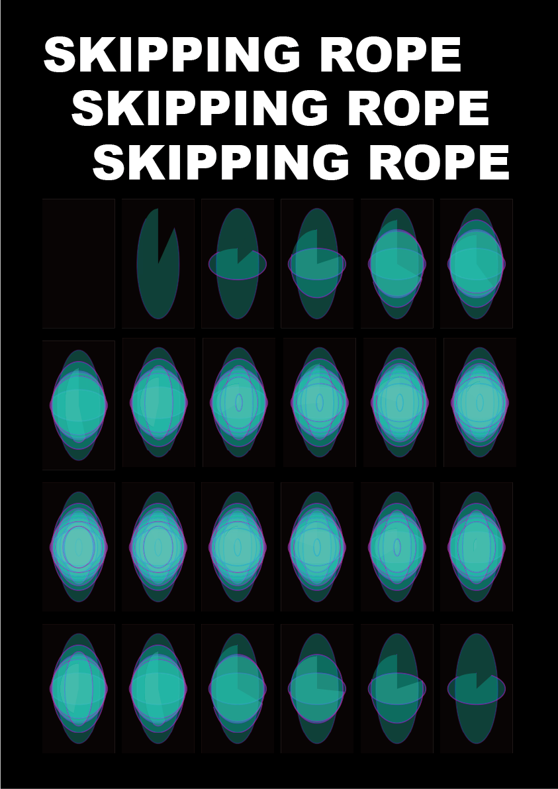
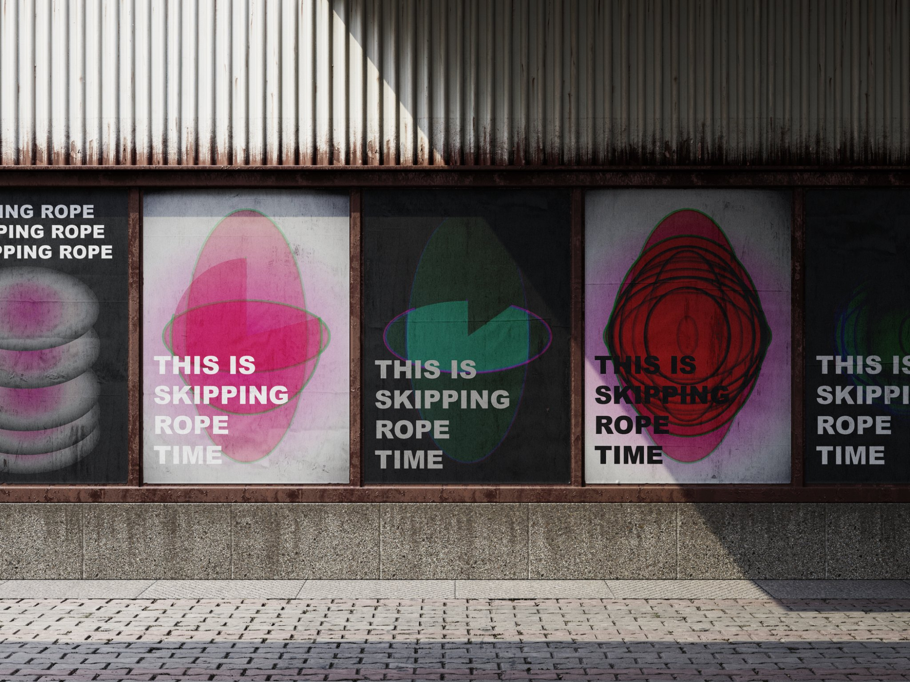
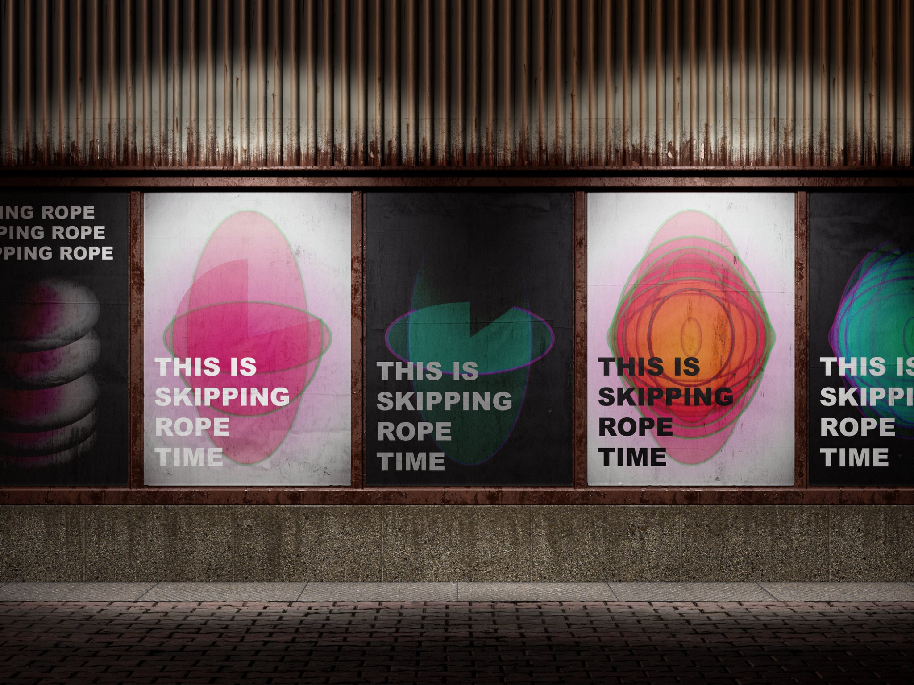

01 / YELLOW INTENSITY
✦ A DIGITAL MINI EXHIBITION ✦HANNA KIM / IMAGINING LINES / 2026
WELCOME TO MY DIGITAL PLAYGROUND
THIS IS
SKIPPING
ROPE TIME!
ONE ROPE. INFINITE TRACES.
AN EXPERIMENT IN MOVEMENT, OVERLAP & DEPTH.
✳
◎
✦ EXHIBIT 000 / THE STARTING POINT
ORIGINAL MOTION
RECORDED SKIPPING-ROPE MOVEMENT / SOURCE MATERIAL
Before the abstract animations, there was a real movement. These two animated studies are derived from my own recorded skipping-rope footage. They reveal the body and movement that inspired the visual system.
REAL MOVEMENT ↓ ABSTRACT TRAJECTORIES
✦ EXHIBIT 001
THE MOTION ↗
ANIMATED TRAJECTORIES / LOOPING MOVEMENT
NOW PLAYING ●
LOOP / SKIPPING ROPE / 2026
✳ The complete vertical video is displayed at its original 9:16 aspect ratio, without cropping.
✦ EXHIBIT 002 / MOTION STUDIES
MOTION EXPERIMENTS
TWO MORE STUDIES IN COLOUR, REPETITION & MOVEMENT
A collection of moving-image variations exploring how colour changes the experience of repeated trajectories.
02 / SATURATION
✳ EACH VIDEO PLAYS IN ITS ORIGINAL 9:16 RATIO — NO CROPPING.
✦ EXHIBIT 003
THE VISUAL SYSTEM
HOW REPETITION BECOMES A VISUAL LANGUAGE
◎
ROTATION
The rotating skipping rope becomes an elliptical trajectory.
◎◎◎
ACCUMULATION
Repeated traces overlap to create changing visual density.
◎◎
DEPTH
Colour and transparency build a sense of depth through overlapping lines.
✦ EXHIBIT 004 / EIGHT POSTER DESIGNS
POSTER GALLERY
THIS IS SKIPPING ROPE TIME / EIGHT STATIC COMPOSITIONS
Eight poster compositions developed from the visual language of skipping-rope motion. A series of variations in colour, repetition, transparency and layered trajectories.








SCAN → WATCH → REPEAT
Once this exhibition is published online, you can generate a QR code linking your posters to this page.
✦ EXHIBIT 005 / FINAL DISPLAY
IN THE STREETS
POSTER SERIES / URBAN MOCKUP STUDIES
Imagining how the skipping-rope poster series might appear in a public space — two lighting studies of the same outdoor display.
◈ street_view_01.png DAYLIGHT

◈ street_view_02.png LOW LIGHT

✳ DIGITAL MOCKUPS — VISUALISATIONS OF A POSSIBLE INSTALLATION, NOT PHOTOGRAPHS OF A PHYSICAL EXHIBITION.